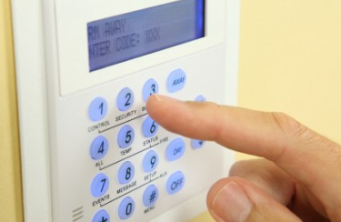
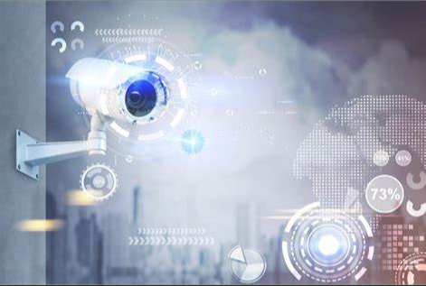

|  | |
|  | |
podemos decir que un sistema de seguridad electrónica será la interconexión de recursos, redes y dispositivos (Medios técnicos activos) cuyo objetivo es precautelar la integridad de las personas y su entorno previniéndolas de peligros y presiones externas.
Las principales funciones de un Sistema de Seguridad Electrónica son: la detección de intrusos en el interior y exterior, el control de accesos y tráfico (personas, paquetes, correspondencia, vehículos,etc.), la vigilancia óptica mediante fotografía o circuito cerrado de televisión (CCTV) y la intercomunicación por megafonía y protección de las comunicaciones.